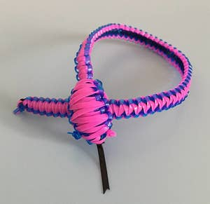
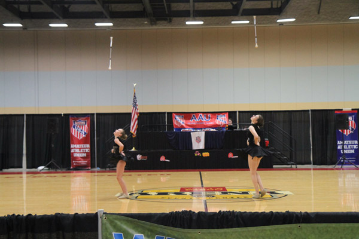

Lanyard Bracelets
The summer of second grade, I was sentenced to two months of "sports camp", a day camp at the local high school. Not being particularly athletic, my only option was arts and crafts. Unfortunately, that meant making lanyard bracelets. Lots of lanyard bracelets. The art room overlooked a courtyard, and I quickly claimed the window sill with the best view as my own. One day, as I robotically assembled yet another lanyard bracelet, I spotted a group of girls who would forever change my life.
Escape!

The girls were tossing and spinning shiny metal sticks. I just knew I had to find out what they were doing, so I told the arts and crafts counselor I needed to use the restroom, and headed for the courtyard. Times were simpler, and I don't think anyone noticed I was gone...for eight weeks! The girls in the courtyard were part of the high school majorette line, and practiced every day. They were kind enough to show me how to twirl a baton...I was in heaven!
Fast forward a half dozen or so years (and plenty of lessons) and I was happily performing on the football field and basketball court as part of the line at the very same high school where it all began.
I would go on to twirl competitively, and ultimately become a baton twirling coach and judge. Although I never figured out how to turn my passion into a full-time job, it has rewards. I have made many friends and visited half the country, including trips to Disney, Universal, and a week in Hawaii, all thanks to baton twirling.
Coaching & Judging
 |
 |
|---|
Now, I coach a team amd train individual competitive althletes as well as past and future college feature twirlers. I think I enjoy sharing the sport with them even more than I love twirling myself. The girls are amazing! The little ones are cute and silly and so happy just to come to practice. As they get older it is fun to see them develop their skills and set goals. Each time a new twirler enters my gym, I wonder what she will do with what she learns? Then, I wonder if she's ever had to make a lanyard bracelet!